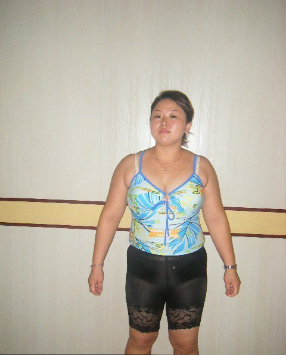
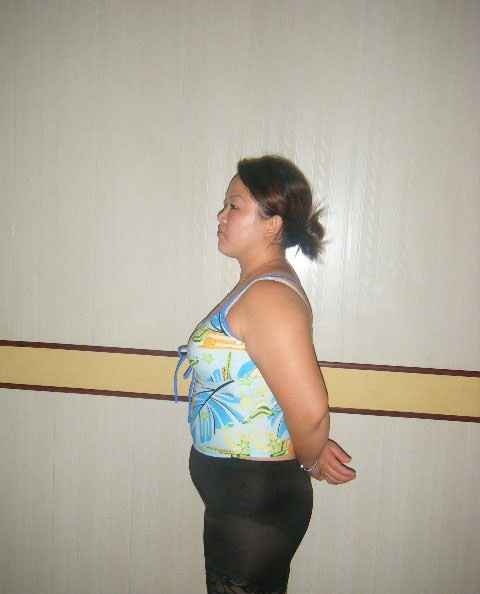
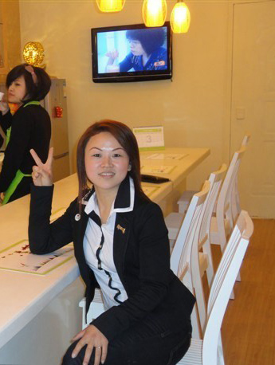
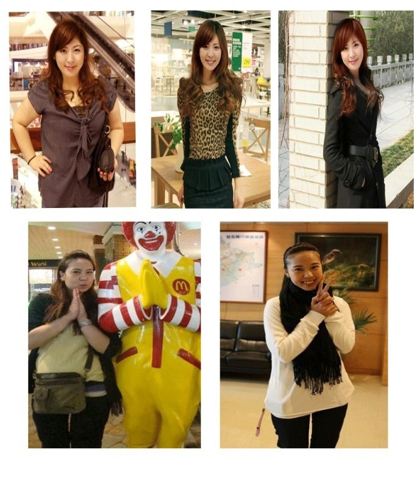

您好，当你看到这篇日记的时候，相信你也和曾经的我一样，一个默默无闻的胖子！因为那肥嘟嘟的大脸蛋，而感到自卑。因为那柱子似的大腿，一直不被领导重视，更让人绝望的是那杀千刀的负心汉 ，找别的女人去， 你们的痛苦，你们的纠结我都经历过，所以我叫你亲爱的亲。
此刻 我正一个人坐在台灯下，望着窗外发呆呢。这个QQ87790908 有几年了，最初的想法很简单，因为在网上发帖说自己减肥成功，很多姐妹找我交流，后来为了让更多的姐妹像我一样减肥成功，就顺便推荐了一下我曾经购买的一款效果非常好的减肥产品，给大家。一年多了，很多很多的姐妹加我QQ，很多的姐妹在我帮助下减肥成功，一直想写点东西给你们交流下，可是白天工作太忙，咨询我问题的姐妹太多，晚上有时候还要照顾孩子，有时候很多姐妹很多问题，都来不及回答。
今天好不容易闲下来，和大家分享一下我的减肥故事和这一年多很多让我感动的故事。如果你真心想减肥，
请耐心的看下去因为这将是你改变人生的唯一机会！

上面几张是我29岁刚刚生完孩子时候的照片，实实在在的165斤，全身虚肉！我也许是最不幸的一个，因为我从小就胖， 我身边很多的朋友，叫我"熊姐"！每当他们这么叫我，我总是假装不在乎。可是随着年龄的变化，个子越来越高， 这样显得身体更加“庞大”，让我越来越感到难堪！我是个好强的女孩，不想让自己落后其他的女生，从我注意 自己身材开始，我就开始想办法瘦下去。
记得上初一的时候，我就经常央求妈妈给我想办法，只要能瘦下去， 叫我怎样都行！可是妈妈总是说：”乖，多运动运动，长大了就会自己瘦下去的“。可是随着年龄的变化，不但没瘦， 反而越来越胖！拥有这般身材，让好强的我，越来越自卑，性格慢慢的孤僻起来。好多次我委屈的哭了，为什么偏 偏我胖，为什么我就不能像其他同学一样瘦瘦的美美的。
从此我想尽一切办法瘦身，尝试过无数种方法， 可是结果...

从此我想尽一切办法瘦身，整整坚持了10年历程。这是一部斗争史，更是一部辛酸史。曾傻傻的跟风，在网上买各 种减肥产品吃，也曾迷信各种瘦身“神仙水”，据说擦一个月可以瘦下去，可是结果根本没用,并且有的吃完后头晕、 口渴起副作用甚至拉肚子。
妈妈看到我脸色苍白虚脱的样子，就冲我吼：“就不知道拿钱干点别的！！！”.有时候 尽管有副作用但还是不想放弃继续服用，有那么几次朋友和家人说瘦了点，很开心，可还是不明显，郁闷啊。眼看着年龄一天一天的多，大学也快毕业了。
于是我抽疯式的在网上寻求瘦身产品，不管家里人怎么说， 瓶瓶罐罐的包里放了一堆，人家说我这种身材需要搭配好几种才能见效快，有咀嚼的，有吞服的，有泡茶的， 每天基本都是水果为主，晚上去跑跑步，居然这么疯狂的坚持1个月，花了大概几千大洋吧！
结果：体重到没有下降多少，倒进了医院打吊瓶，营养不良加上乱吃那些东西，白花冤枉钱不说差点要了命！ 我真的快绝望了！
直到结婚我都没有成功，当时都没有勇气举行婚礼，一直要求着老公旅游结婚，因为那样我就不同 见那么多熟人了。估计这辈子就要“毁”在这破身材手里了！
一次非常偶然的机会，我上网看别人的减肥感悟和方法，看到有一个网友的情况和我一样，属于顽固性肥胖体质，也是减了很多年都没有减下去，言谈间，他竟然说有办法让我瘦下去，说实在的我一点也不惊喜。因为失败太多次了，除了没有严重到去做抽脂之外， 什么方法没试过啊！她说配合一点运动做点减肥操，郑多燕的减肥操，反正她是这样瘦下来，女人嘛，哪有那么容易死心的。不经历风雨怎么见彩虹！我也要试试！！！
就是这一次非常偶然的机会，竟然改变了我的人生・・・・・
之后的半个月，早晚饭各一包，然后还是那样 吃很少的饭，最主要就是做好了拉肚子的准备，就这样记得吃了4、5次，偶尔那天想起了买的电子称， 打开往上一站，哎，果然还是失望~我不该抱希望啊！
但是真的想不到！！在快一个月的时候我站在电子称上久久没有下来，看到体重数字时瞬间我就像 石化了一样，足足盯着看着好久！是真的吗？刹那间，我欣喜若狂！真是太不可思议了，体重竟然有下 降8斤多！我揉揉眼确认确认没有看错后，飞也似的，跑到桌子边，拿起那仅剩下一点点“救命茶”跳 到沙发上将装茶的包装盒狠狠的亲了一口！（你们可能体会不到我的喜悦之情。相信你们使用以后也会 和我一样的）！对我来说这8斤虽然显不出来瘦，但至少没有副作用，并且是开始至今最厉害的一次记录。
当时真的没有想到我的效果那么的好，后来我用了两个疗程就完全瘦下来了

下面是一些朋友减肥后发的心情
陈小姐：这是减肥以前的了，本来想把脸部马赛克后来想为了大家 相信算了，因为自己很胖过，所以知道 mm 的心情，我很想把经验分享给 mm 们。我的身高 167 ，当时 165 斤 腰围 2 尺 4
我是使用亦可瘦曲线茶二个月后，瘦了30多斤了，全部在肚子后背和大腿，相信应该能看出吧，但是我没停止， 还要坚持，mm记住了，减肥其实不难，难在坚持，想做个瘦美人，一定要做到两个字，坚持！此真心感谢！
下面是她们的照片，也是我坚持走下去的动力！！！

和姐妹们说了那么多，其实我就想告诉你们，可以用人格保证效果！！！
效果确切、肯定，有效率达99%以上 你可能认为：我是在“夸张宣传”，是在“吹牛”。 我可以理解你！ 我以前就是这类“宣传”的受害者。以前总是相信明星推荐，专家认证，现在想想还
是传统的东西值得一试！ 有时候机会来得就是很突然，刚开始吃这个产品的时候，我也不太相信，我也差点 扔了~所以我感觉我非常幸运。现在机会又摆在了你们的面前，至于你们如何把握，看你 自己的了！如果压根不相信自己也能102，也能穿上那些时尚的美装秀身材，请你立即离开，你不是我要帮 助的人，我只是帮助你瘦身，不是求你瘦身！羡慕吗？如果羡慕，请对自己说声： yes
写了这么多，好累，呵呵，文采不好，希望姐妹们 可以担待，但是这些是我和我那些一年多经历的故事，分享给大家 真心希望对你们有帮助。另外还有一些问题 ，我希望妹妹们 不要在QQ问了，可以参考我的另外一篇日记。
进入晓雅姐代理的的唯一官方销售网站http://www.quxiancha.com/?uid=828，赶紧变瘦变美！记着一定要买正品
感悟：自己的苦楚只有自己知道啊！我曾经用过不少减肥法子，但是效果往往差强人意，直到不久前，从失败中得出减肥经的我，算是苦尽甘来，终能如愿了！趁着有空余时间，今天就来和大家分享分享吧！